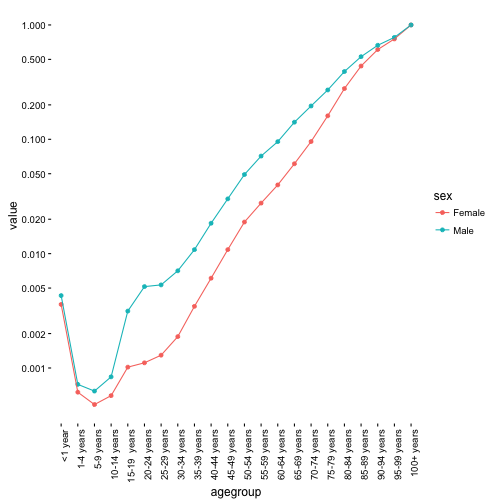

Jak pobrać dane z...?
Poniżej opiszemy kilka użytecznych źródeł danych dostępnych w Internecie. Liczba interesujących źródeł przyrasta w niesamowitym tempie. Poniższe bazy są najczęściej bardzo bogate i umożliwiają porównani pomiędzy krajami.
Bazy danych Światowej Organizacji Zdrowia (World Health Organization, WHO)
Światowa Organizacja Zdrowia, WHO, działa w ramach ONZ i zajmuje się ochroną zdrowia (http://www.who.int/en/). Udostępnia setki tabel przedstawiających jak różnorodne wskaźniki zdrowotne zmieniają się w różnych krajach, regionach.
Aby pobrać dane bezpośrednio z serwerów WHO można wykorzystać pakiet WHO dostępny na serwerach CRAN (https://cran.r-project.org/web/packages/WHO/index.html).
Przedstawimy kluczowe funkcje pozwalające na podanie danych na przykładzie współczynnika śmiertelności.
Zaczniemy od pobrania słownika z listą wszystkich nazw i opisów tabel, można to wykonać funkcją get_codes(). Następnie wybierzemy tylko te, które w opisie mają słowo dying.
library(WHO)
codes <- get_codes()
as.data.frame(codes[grep(codes$display, pattern="dying"), ])
## label
## 1 MDG_0000000001
## 2 MDG_0000000007
## 3 LIFE_0000000030
## 4 LIFE_0000000032
## 5 WHOSIS_000004
## 6 cmr
## 7 pnmr
## 8 NCDMORT3070
## display
## 1 Infant mortality rate (probability of dying between birth and age 1 per 1000 live births)
## 2 Under-five mortality rate (probability of dying by age 5 per 1000 live births)
## 3 nqx - probability of dying between ages x and x+n
## 4 ndx - number of people dying between ages x and x+n
## 5 Adult mortality rate (probability of dying between 15 and 60 years per 1000 population)
## 6 Child mortality rate (probability of dying between age 1 and age 5 per 1000 live births)
## 7 Postneonatal mortality rate (probability of dying between age 30 days and 11 months per 1000 live births)
## 8 Probability (%) of dying between exact ages 30 and 70 from any of cardiovascular disease, cancer, diabetes, or chronic respiratory disease
## url
## 1 http://apps.who.int/gho/indicatorregistry/App_Main/view_indicator.aspx?iid=1
## 2 http://apps.who.int/gho/indicatorregistry/App_Main/view_indicator.aspx?iid=7
## 3 http://apps.who.int/gho/indicatorregistry/App_Main/view_indicator.aspx?iid=30
## 4 http://apps.who.int/gho/indicatorregistry/App_Main/view_indicator.aspx?iid=32
## 5 http://apps.who.int/gho/indicatorregistry/App_Main/view_indicator.aspx?iid=64
## 6
## 7
## 8 http://apps.who.int/gho/indicatorregistry/App_Main/view_indicator.aspx?iid=3354
Interesująca tabela ma identyfikator LIFE_0000000030. Pobierzemy ją do R (co może trochę potrwać i wymaga połączenia z Internetem) a następnie sprawdzimy jakie cechy są w tej tabeli opisane.
df <- get_data("LIFE_0000000030")
colnames(df)
## [1] "publishstate" "gho" "sex"
## [4] "worldbankincomegroup" "agegroup" "country"
## [7] "region" "year" "value"
Wykorzystujemy pakiet dplyr by wybrać tylko dane dla Polski z roku 2013.
library(dplyr)
df %>%
filter(year == 2013, country == "Poland") %>%
select(agegroup, value, sex) ->
poland2013
head(poland2013)
## Source: local data frame [6 x 3]
##
## agegroup value sex
## (chr) (dbl) (chr)
## 1 95-99 years 0.754675 Female
## 2 5-9 years 0.000628 Male
## 3 60-64 years 0.039902 Female
## 4 85-89 years 0.527849 Male
## 5 25-29 years 0.001294 Female
## 6 50-54 years 0.049180 Male
Możemy teraz narysować śmiertelność dla obu płci. Dla mężczyzn jest znacznie wyższa niż dla kobiet.
library(ggplot2)
poland2013$agegroup <- factor(poland2013$agegroup,
c("<1 year","1-4 years","5-9 years", "10-14 years","15-19 years",
"20-24 years", "25-29 years", "30-34 years", "35-39 years",
"40-44 years", "45-49 years", "50-54 years", "55-59 years",
"60-64 years", "65-69 years", "70-74 years", "75-79 years",
"80-84 years", "85-89 years", "90-94 years", "95-99 years", "100+ years"))
ggplot(poland2013,
aes(agegroup, value, color=sex, group=sex)) +
geom_point() + geom_line() + theme_classic() +
scale_y_log10(breaks=c(0.001,0.002,0.005, 0.01,0.02,0.05,0.1,0.2,0.5,1)) +
theme(axis.text.x = element_text(angle = 90, hjust = 1))

Inne narzędzia
Poza opisanymi powyżej źródłami, warto wiedzieć również o
Pakiet
FAOSTATpozwala na dostęp do danych Organizacji Narodów Zjednoczonych do spraw Wyżywienia i Rolnictwa (Food and Agricultural Organization of the United Nations). Pakiet jest dostępny na serwerze CRAN pod adresem https://cran.r-project.org/web/packages/FAOSTAT/index.htmlPakiet
WDIpozwala na dostęp do wskaźników zbieranych przez Bank Światowy (World Bank). Pakiet jest dostępny na serwerze CRAN pod adresem https://cran.r-project.org/web/packages/WDI/index.html